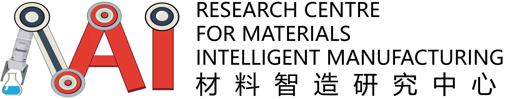

<header class="page-head menu fact-header" id="header">
    <div class="header-wrap">
        <div class="fact-header__top">
            <div class="container header-top__container">
                <div class="header-wrap__left">
                    <div class="logo-container">
                        <a href="index.html">
                            
                        </a>
                    </div>
                </div>
                <div class="header-wrap__right">
                    <div class="fn-blk-wrap">
                        <div class="fn-blk sitesearch-blk">
                            <button class="sitesearch__trigger fn-blk__link"><span class="ico-search"></span></button>
                        </div>
                        <div class="fn-blk share-blk">
                            <button class="share-blk__trigger fn-blk__link"><span class="ico-share"></span></button>
                        </div>
                        <div class="fn-blk q-access-blk">
                            <button class="fn-blk__link">Quick Access ▼</button>
                        </div>
                        <div class="fact-header__poly-logo fact-logo-container">
                            <a href="https://www.polyu.edu.hk/en/" target="_blank">
                                
                            </a>
                        </div>
                    </div>
                </div>
            </div>
        </div>
    </div>
</header>
<!-- Navigation Placeholder -->
<div id="navigation-placeholder"></div>
